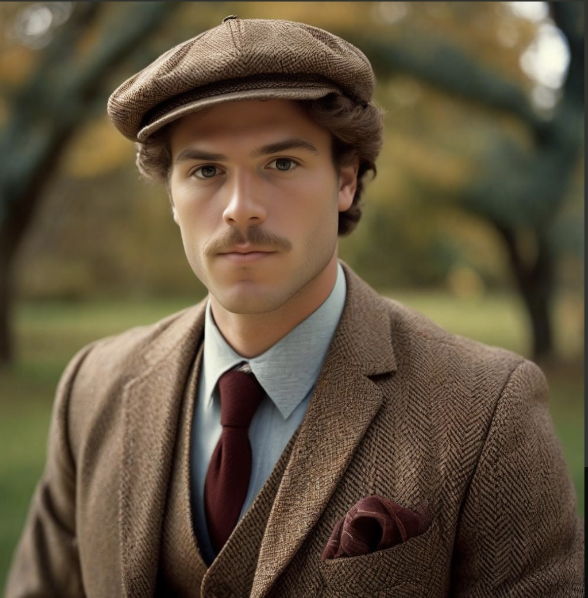

Roslyn National Croquet Club

Our Story:
Located in Downers Grove, Illinois, the Roslyn National Croquet Club is a distinguished landmark steeped in tradition. For over a century, this iconic venue has been the heart of competitive croquet, where lush, manicured lawns set the stage for memorable matches. Here, the spirit of the game thrives, blending fierce competition with a deep sense of community. The Roslyn National Croquet Club is more than just a sporting venue; it is a sanctuary where the rich history and cherished traditions of croquet are preserved and celebrated.
Top Players
